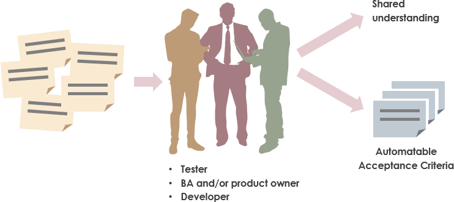

How To
|
John Riley Principle Agile Coach and Trainer |
 |
### Share Your Experience
---
 @ReadySetAgile
@ReadySetAgile @ReadySetAgile
@ReadySetAgile https://www.facebook.com/ReadySetAgile/
https://www.facebook.com/ReadySetAgile/ https://www.linkedin.com/company/ready-set-agile/
https://www.linkedin.com/company/ready-set-agile/
### Agenda
---
#### It's About Automating Acceptance Testing
---

#### What Agile automated testing is NOT
---

Automating "done" functionality

Responsibility
of QA only
of QA only

Daunting
Toolset
Heavy
Heavy
### Defining a Test-First Mindset
---

What does that mean?
##### A cycle of
##### developing tests
##### *before* any features
##### are developed
`(Test-Driven Development)`
The Cycle:
REDGREEN
REFACTOR
RED
- Test defined and written
- Test is run
- Test Fails!!
GREEN
- Code is written to
satisfy test passing
REFACTOR
- Code is re-written
according to best practices
WITHOUT CHANGING
BEHAVIOR
ATDD
A product development practice where acceptance tests are written BEFORE any product code is developed
### Why should we care about acceptance tests with test-driven development?
---
#### Why should we care about acceptance tests with test-driven development?
---
- You are refining stories
- Phone number field
- Only numbers are allowed
- Format into correct phone number
- Create your TOP 3 testing scenarios
Phone Number: ( ) - Well-refined acceptance criteria IS the test script
The Acceptance Criteria IS code
The good news:
You are probably doing some of these practices now, and are just not aware.
### Ingredients
---
A Common, Controlled Language
A Lightweight Refinement Process
A Common Tool
A Plan to Scale
### Baking Instructions
---
Agree on a Common, Controlled Language
### Baking Instructions
---
Agree on a Common, Controlled Language
Technique 1: Develop a Taxonomy and Terminology
 http://contentrules.com/taxonomy-terminology-controlled-vocabulary/
http://contentrules.com/taxonomy-terminology-controlled-vocabulary/


Agree on a Common, Controlled Language
Technique 2: Separate the "What" from the "How"

Agree on a Common, Controlled Language
Technique 3: Structure the "What" and "How" into templates

Agree on a Common, Controlled Language
Use this language in your Lightweight Refinement Process
Use this language in your Lightweight Refinement Process
Technique 1: Schedule regular refinement sessions

Use this language in your Lightweight Refinement Process
Technique 2: Amigo Reviews

Use this language in your Lightweight Refinement Process
Technique 3: Respond to Change
limit logging defects
look at automation suite during refinement
Agree on a Common, Controlled Language
Use this language in your Lightweight Refinement Process
Choose a tool that lines up with your language and process
Choose a tool that lines up with your language and process
...and make sure *everyone* can use it


### Example
---
Template
Acceptance Criteria
HomePage.feature
Feature: Home Page
#AC Template:
# GIVEN I am a <role>
# AND I <user_action> <field>
# WHEN I <user_action> <control>
# THEN I will be <app_action> <page>
Scenario Outline: User Log in
GIVEN I am a <role>
AND I enter my user name
AND I enter my password
WHEN I click the login button
THEN I will be navigated to the home page
Examples:
| role |
| home banking user |
| bank manager |
| administrator |
### Admiring our result (benefits)
---
### Admiring our result (benefits)
---
The test suite
IS the
System Of Record
IS the
System Of Record

The test suite
is a
POWERFUL
onboarding tool
is a
POWERFUL
onboarding tool

Integral to a
DevOps culture
DevOps culture
### Sharing with Others
---
### Sharing with Others
---
Scale
Organically
### Coming in November
---
Using XRay with Jira
Lifestyle Communities - 230 West St #200, Columbus, OH 43215
November 13, 2018 @ 6:00PM
November 13, 2018 @ 6:00PM
### Services at www.ReadySetAgile.com
---

### Thank you!
---
john@ReadySetAgile.com - John Riley
@ReadySetAgile @ReadySetAgile https://www.facebook.com/ReadySetAgile/ https://www.linkedin.com/company/ready-set-agile/